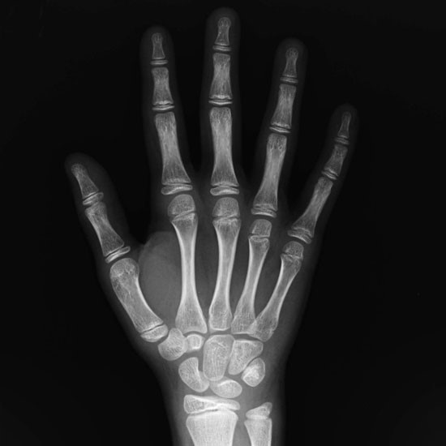

Modo de estimación de edad a un sujeto
Se estima la edad de un sujeto o paciente, a partir de imágenes digitales de rayos-X de una o dos manos. Esta tarea es rutinariamente realizada por pediatras y radiólogos para diagnosticar desórdenes endrocrinológicos y hormonales. Este sistema será desarrollado para el equipo de radiología del Hospital de niños, con el objetivo de ser usado por radiólogos y técnicos en imágenes médicas del hospital para realizar.
